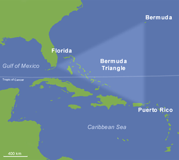

Бермудский треугольник

Берму́дский треуго́льник (англ. Bermuda Triangle) — район в Саргассовом море (Атлантический океан), в котором, согласно одной из версий, происходят таинственные исчезновения морских и воздушных судов, и прочие аномальные явления. Район ограничен треугольником с вершинами в Майами, Бермудских островах и Сан-Хуане (Пуэрто-Рико). Сторонники теории о загадочных исчезновениях в зоне Бермудского треугольника выдвигают различные гипотезы для их объяснения: от необычных погодных явлений до похищений инопланетянами или жителями Атлантиды. Скептики, однако, утверждают, что исчезновения судов в Бермудском треугольнике происходят не чаще, чем в других районах Мирового океана, и объясняются естественными причинами. Район очень сложен для навигации: здесь большое количество отмелей, часто зарождаются циклоны и штормы. При этом через этот участок пролегают популярные водные и воздушные маршруты из Карибского моря в Европу и с восточного побережья США в Южную Америку, в связи с чем навигация здесь достаточно активная. Такого же мнения придерживаются Береговая охрана США и страховой рынок Lloyd’s.
История
О «таинственных исчезновениях» в этом районе мира впервые упомянул корреспондент Associated Press Эвард Ван Винкл Джонс в 1951 году[1]. Само словосочетание «Бермудский треугольник» впервые употребил писатель Винсент Гаддис в 1964 году. В журнале «Аргоси» он опубликовал статью «Смертельный Бермудский треугольник» (англ. The Deadly Bermuda Triangle) о странном исчезновении звена 19 торпедоносцев-бомбардировщиков[2]. В конце 60-х и начале 70-х годов XX века стали появляться многочисленные публикации о тайнах «Бермудского треугольника». В 1974 году американский лингвист Чарльз Берлиц (англ.), сторонник существования аномалий в Бермудском треугольнике, опубликовал книгу «Бермудский треугольник», в которой были описаны таинственные исчезновения в этом районе. Книга вызвала огромный интерес, популяризировав теорию о необычных свойствах Бермудского треугольника. В дальнейшем, однако, было показано, что некоторые факты в книге изложены неверно. В 1975 году скептик-реалист Лоуренс Дэвид Куше (англ.) опубликовал книгу «Бермудский треугольник: мифы и реальность» (рус. пер. — М.: Прогресс, 1978), в которой он доказывал, что ничего сверхъестественного и таинственного в этом районе не происходит. Эта книга основана на многолетних исследованиях документов и беседах с очевидцами, которые выявили многочисленные фактические ошибки и неточности в публикациях сторонников существования тайны Бермудского треугольника.
Происшествия
Сторонники теории упоминают об исчезновении приблизительно 100 крупных морских и воздушных судов за XX век. Кроме исчезновений, сообщается об исправных судах, брошенных экипажем, и о других необычных явлениях, таких как мгновенные перемещения в пространстве, аномалии со временем и т. п. Лоуренс Куше и другие исследователи показали, что некоторые из этих случаев произошли за пределами Бермудского треугольника. О некоторых происшествиях вообще не удалось найти никакой информации в официальных источниках.
Звено «Эвенджеров» (вылет № 19)
Наиболее известным случаем, упоминаемым в связи с Бермудским треугольником, является исчезновение звена из пяти бомбардировщиков-торпедоносцев типа «Эвенджер». Эти самолёты 5 декабря 1945 года взлетели с базы военно-морских сил США в Форт-Лодердейле и не вернулись. Их обломки не были найдены. Согласно Берлицу, эскадрилья, состоявшая из 14 опытных пилотов, по таинственным причинам исчезла во время обычного полёта в ясную погоду над спокойным морем. Сообщается также, что в радиопереговорах с базой пилоты будто бы говорили о необъяснимых отказах навигационного оборудования и о необычных визуальных эффектах — «мы не можем определить направление, а океан выглядит не так, как обычно», «мы опускаемся в белые воды». После исчезновения Эвенджеров на их поиски были отправлены другие самолёты и один из них — гидросамолёт «Мартин Маринер» — тоже бесследно исчез. По версии Куше, на самом деле звено состояло из курсантов, выполнявших тренировочный полёт. Опытным пилотом был только их инструктор, лейтенант Тэйлор, но он был лишь недавно переведён в Форт-Лодердейл и был плохо знаком с районом полётов. В зафиксированных радиопереговорах ничего не говорится о каких-либо таинственных явлениях. Лейтенант Тэйлор сообщил, что он потерял ориентировку и у него отказали оба компаса. Пытаясь определить своё местоположение, он ошибочно решил, что звено находится над островами Флорида-Кис, южнее Флориды, поэтому ему предложили сориентироваться по солнцу и лететь на север. Последующий анализ показал, что, возможно, на самом деле самолёты были значительно восточнее и, придерживаясь курса на север, двигались параллельно берегу. Плохие условия радиосвязи (помехи от других радиостанций) мешали определить точное положение эскадрильи. Через некоторое время Тейлор решил лететь на запад, но достичь берега не удалось, в самолётах закончилось топливо. Экипажи Эвенджеров были вынуждены попытаться совершить посадку на воду. К этому времени уже стемнело, а море, по сообщениям судов, находившихся тогда в том районе, было очень неспокойным. После того, как стало известно, что звено Тейлора заблудилось, на их поиски были отправлены другие самолёты, в их числе два «Мартин Маринера». По мнению Куше, самолёты этого типа имели некий недостаток, заключавшийся в том, что пары́ топлива проникали внутрь кабины и достаточно было искры для того, чтобы произошёл взрыв. Капитан танкера «Гейне Миллс» (англ. Gaines Mills) сообщил о том, что он наблюдал взрыв и падающие обломки и затем обнаружил на поверхности моря масляное пятно.
C-119
Самолёт C-119 с 10 членами экипажа исчез 6 июня 1965 года в районе Багамских островов[3]. Точное время и место исчезновения неизвестно, и его поиски ничего не дали. Хотя исчезновение самолёта при перелёте через Атлантику может объясняться множеством естественных причин, СМИ часто связывают этот случай с похищением людей инопланетянами.
Попытки объяснения
Сторонники тайны Бермудского треугольника выдвинули несколько десятков различных гипотез для объяснения тех таинственных явлений, которые, по их мнению, там происходят. Эти гипотезы включают в себя предположения о похищении судов НЛО[4][5]. Одно из объяснений возлагает вину на оставшиеся технологии затерянного континента Атлантиды, в частности на затопленное скальное образование, известное как дорога Бимини у острова Бимини на Багамах, которое по некоторым определениям находится в пределах Бермудского треугольника[6]. Некоторые выдвигают гипотезу о том, что в районе Бермудского треугольника существует параллельная вселенная, которая вызывает деформацию времени/пространства и засасывает объекты вокруг нее в параллельную вселенную[7]. Скептики утверждают, что сообщения о таинственных событиях в Бермудском треугольнике сильно преувеличены. Морские и воздушные суда пропадают и в других районах земного шара, иногда бесследно. Неисправность радио или внезапность катастрофы может помешать экипажу передать сигнал бедствия. Поиск обломков в море — непростая задача, особенно в шторм или когда место катастрофы точно не известно. Если учесть очень оживлённое движение в районе Бермудского треугольника, частые циклоны и штормы, большое количество отмелей, то количество случившихся здесь катастроф, которые так и не получили объяснения, не является необычно большим. Кроме того, сама по себе дурная слава Бермудского треугольника может приводить к тому, что ему приписываются катастрофы, в реальности случившиеся далеко за его пределами, что вносит искусственные искажения в статистику.
Выбросы метана
Предложено несколько гипотез, объясняющих внезапную гибель судов и самолётов выбросами газа — например, в результате распада гидрата метана на дне моря. Согласно одной из таких гипотез, в воде образуются большие пузыри, насыщенные метаном, в которых плотность понижена настолько, что корабли не могут держаться на плаву и мгновенно тонут. Есть предположение, что поднявшись в воздух, метан может вызвать также крушение самолётов — например, из-за понижения плотности воздуха, которое приводит к снижению подъёмной силы и искажению показаний альтиметров. Кроме того, метан в воздухе может привести к остановке двигателей или взрыву. Экспериментальным путём была действительно подтверждена возможность достаточно быстрого (в пределах десятков секунд) затопления судна, оказавшегося на границе выброса газа в случае, если газ выделяется одним пузырём, размер которого больше или равен длине судна[8][9][10]. Однако остаётся открытым вопрос о таких выделениях газа. Кроме того, гидрат метана находится и в других местах в мировом океане, где не было зафиксировано массовых случаев пропажи кораблей.
Волны-убийцы
Высказываются предположения, что причиной гибели некоторых судов, в том числе и в Бермудском треугольнике, могут быть т. н. блуждающие волны, которые, как считается, могут достигать в высоту 30 метров[11].
Инфразвук
Предполагается, что при определённых условиях в море может генерироваться инфразвук, который оказывает воздействие на членов экипажа, вызывая панику и галлюцинации, в результате которой они покидают судно.
В произведениях культуры
Тема Бермудского треугольника весьма популярна в различных произведениях культуры. Вокруг легенды Бермудского треугольника сняты целые фильмы и мини-сериалы. Упоминание Бермудского треугольника встречается в популярных фильмах, мультфильмах и сериалах, например, «Экстремальные охотники за привидениями», «Секретные материалы», и даже мультсериале «Утиные истории». Теме Бермудского треугольника посвящено множество псевдонаучных телевизионных передач. Не обошёл тему популярности Бермудского треугольника в кино и СМИ и В. С. Высоцкий, написав ироническую песню «Письмо в редакцию телевизионной передачи „Очевидное-Невероятное“ из сумасшедшего дома».
См. также
- Полинезийский треугольник
- Море дьявола